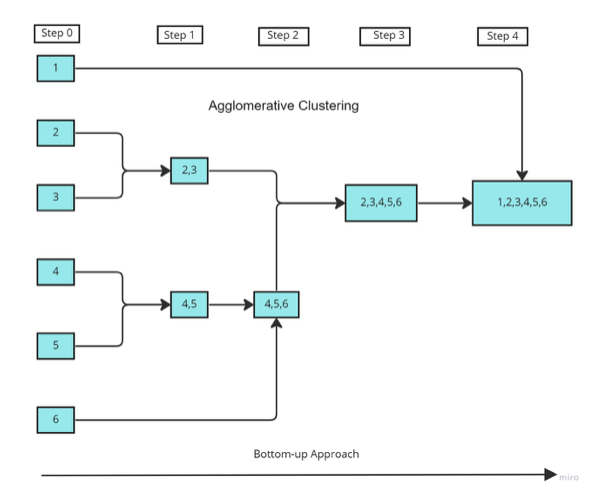
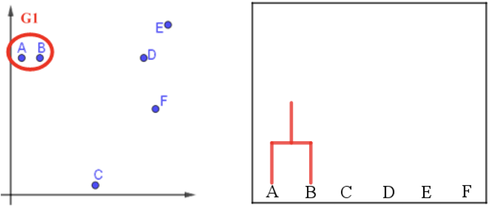
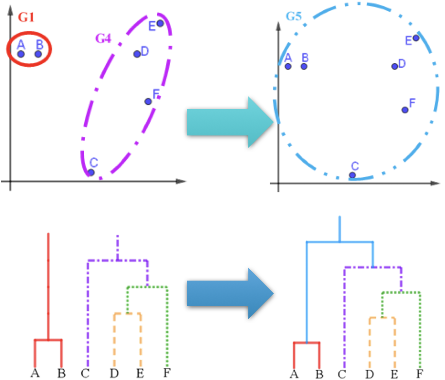
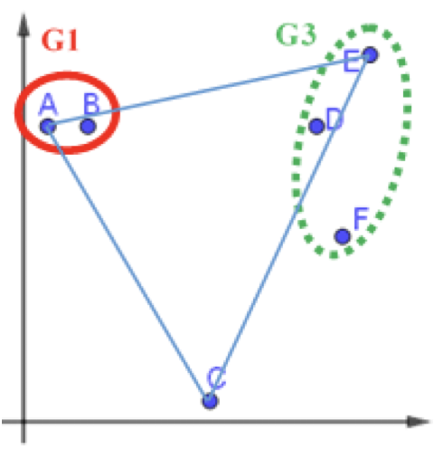
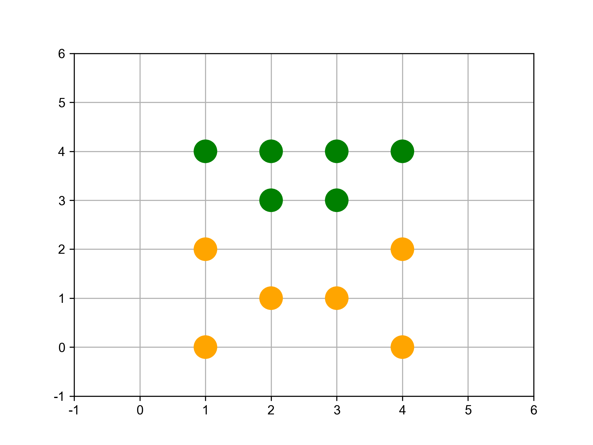
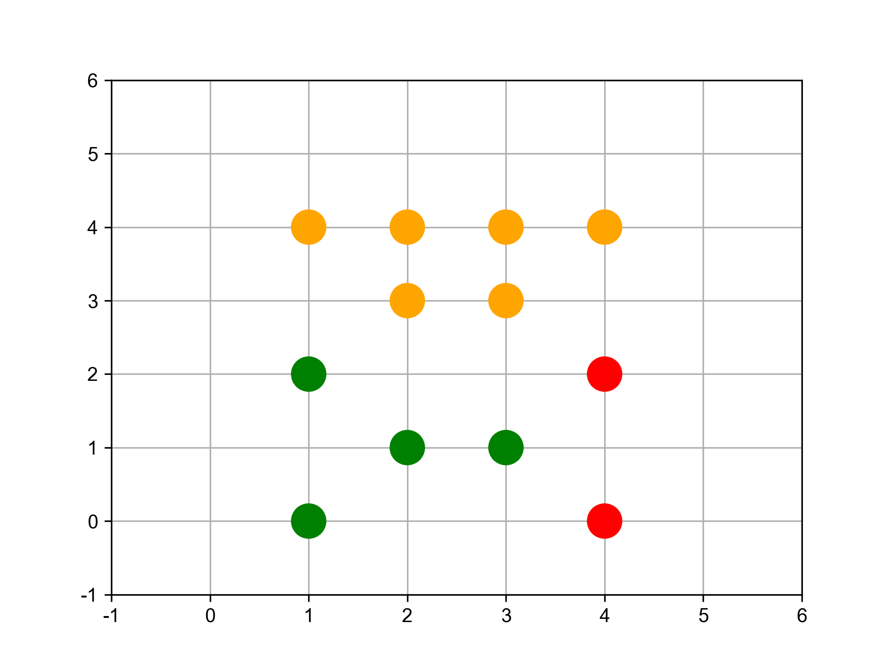
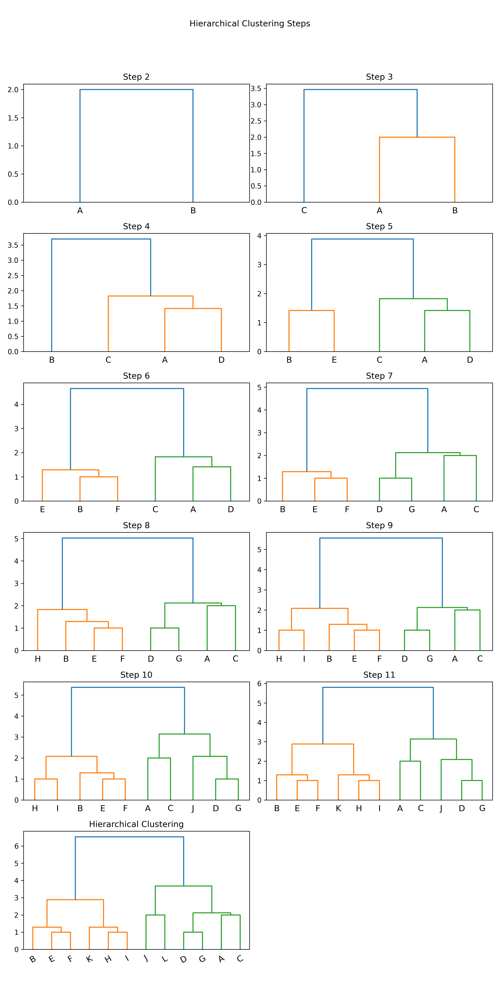
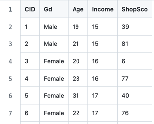
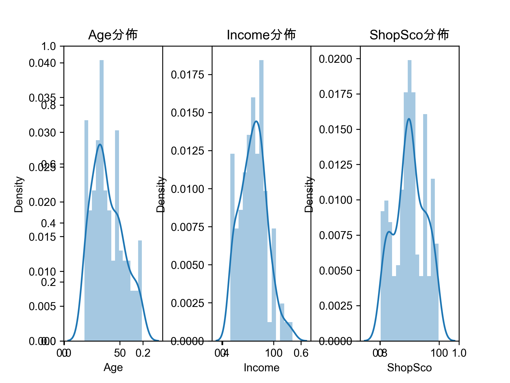

非監督式學習
Table of Contents

1. 非監督式學習

Figure 1: AI, Machine Learning與Deep Learning
1.1. 目的
非監督式學習接收未被標記的數據，並通過演算法根據資料的基礎結構(如常見的模式、特色、或是其他因素)將數據分類，而非 做出預測 。例如：
- 將網站訪客進行分類: 性別、喜好、上網時段
將一堆照片依類型分類: cat、automobile、truck、frog、ship…

Figure 2: 照片分類
異常檢測(Anamaly Detection): 例如，找出不尋常的信用卡交易以防止詐騙、找出製程中有缺陷的產品、將資料組中的離群值挑出來再傳給另一個演算法

Figure 3: Novelty Detection
1.2. 非監督式學習的常見演算法
為了讓相近的資料可以聚集在一起，通常還是會將資料的特徵值數值化，再透過計算資料間的「距離」進行分群，在此常以「歐幾里得距離」為計算方式。常見的分群演算法包括：
1.2.1. 分群(clustering)
聚類(集群)
- K-Means
- DBSCAN
- 階層式分群分析(Hierarchical Cluster Analysis, HCA)
1.2.2. 異常檢測與新穎檢測
- One-class SVM
- 孤立森林(Isolation Forest)
1.2.3. 降維
降維有兩大分支：線性投影與流形學習1。
線性投影
- 主成分分析(Principal component analysis, PCA)
PCA有數種變形：mini-batch變形式PCA(incremental PCA)、非線性變形(kernel PCA)、稀疏變形(sparse PCA)
- 奇異值分解(Singular value decomposition, SVD)
降低原來特徵所組成的矩陣的秩（rank)，使得原來的矩陣可以使用擁有較小的秩的矩陣所組成的線性組合來表示。
- 隨機投影(Random projection)
由高維投影至低維空間，但同時保留點與點間的矩離，可以使用隨機高斯矩陣（random Gaussian matrix)或隨機稀疏矩陣(random sparse matrix)來實現。
- principal component analysis
- singular value decomposition
- random projection.
流形學習(Manifold learning)
- Isomap
透過估算點與粌近點的捷線(geodesic)或曲線距離(curved distance)，而非使用歐式距離(Euclidean distance)來學習資料流形的內蘊幾何。
- t-distributed stochastic neighbor embedding(t-SNE)
將高維度空間的資料嵌入至二維或三維的空間
- multidimensional scaling (MDS)
- locally linear embedding (LLE)
- dictionary learning
- random trees embedding
- independent component analysis
2. 聚類(集群)
- 任務: grouping objects together based on similarity.
- 應用:
- 在信用卡詐欺偵測中，聚類可以將詐欺交易分組在一起，將其與正常交易分開。
- 如果我們的資料集中的觀測值只有幾個標籤，我們可以先使用聚類對觀測值進行分組（不使用標籤）。 然後，我們可以將少數標記觀測值的標籤轉移到同一組內的其餘觀測值。 這是遷移學習的一種形式，也是機器學習中一個快速發展的領域。
2.1. K-Means
「群集」的概念簡單來說就是將相近的資料彼此分在同一群體。
K-means演算法：將n個點劃分到K個聚落中，如此一來每個點都屬於離其最近的聚落中心所對應之聚落，以之作為分群的標準。

Figure 4: scikit-learn blobs
2.1.1. K-Means原理
八張未標註動物名稱(標籤)的照片，每張照片有兩個特徵值
/2024-02-10_20-19-55_2024-02-10_20-19-45.png)
Figure 5: 資料庫樣本
八張照片的特徵分佈如下

Figure 6: 待處理資料
K-means 演算法執行步驟如下:
決定K值
K 值指的是現有訓練資料(八張照片)要分成的群數，此處K值為2。
選定K個中心點
任意選定 K 個(K=2)中心點，在實際的程式實作可以亂數隨機產生這K個資料點。如圖7所示，隨機指定的兩群資料點的中心點為(5，5)、(6，9)。

Figure 7: 標題
將資料點分群


/2024-02-11_15-59-29_2024-02-10_21-14-09.png)
為 K 個群裡的資料點找出新中心點
依前一步驟的分類，此 8 張資料點已分為兩群，接下來我們再為這兩群資料點找出各自的新中心點，計算方式如下:
- 新★X值: 2+3+4+6+7+9 =5.17
- 新★Y值: 6+5+8+3+6+4 =5.33
- 新★X值:1+8=4.50
- 新★Y值:9+8=8.50

Figure 11: 標題
這個結果看起來不太合理對吧，至少(4,8)這點應該要歸入★這組才對。沒關係，因為還沒完成。
重覆步驟 (3)、(4) 進行下一輪的分群，直到分群結果不再變化
接下來就繼續計算各點到新中心點★(5.17, 5.33)、★(4.50, 8.50)的距離、依新的距離重新對資料點進行分群(即步驟3)，再求出新的中心點(即步驟4)，如此重覆不斷進行，直到分群結果不再變動即告完成。
如何訂K值
- 用K-means演算法需設定「K值」，但難免會面臨難以決定分群數量的狀況。同樣的資料如果要分成3群、4群、5群，就必須做三次不同的操作，而且分群的結果彼此之間不一定有其關聯性。
- 利用「階層式分群法」透過階層架構的方式，以對特徵距離的分析，將資料層層反覆地進行分裂或聚合，彈性決定群數。
2.1.2. K-Means實作:隨機數字 sklearn

Figure 12: 原始資料
# 隨機生成100個(x, y) import pandas as pd data = { 'x': [25, 34, 22, 27, 33, 33, 31, 22, 35, 34, 67, 54, 57, 43, 50, 57, 59, 52, 65, 47, 49, 48, 35, 33, 44, 45, 38, 43, 51, 46], 'y': [79, 51, 53, 78, 59, 74, 73, 57, 69, 75, 51, 32, 40, 47, 53, 36, 35, 58, 59, 50, 25, 20, 14, 12, 20, 5, 29, 27, 8, 7] } samples = pd.DataFrame(data) import matplotlib.pyplot as plt from sklearn.cluster import KMeans kmeans = KMeans(n_clusters=3) #預計分為三群，迭代次數由模型自行定義 kmeans.fit(samples) cluster = kmeans.predict(samples) plt.scatter(samples['x'], samples['y'], c=cluster, cmap=plt.cm.Set1) plt.savefig("images/kmeansScatter.png", dpi=300) #plt.show()

Figure 13: scikit-KMeans
2.1.3. K-Means應用: 壓縮影像
1: import numpy as np 2: import matplotlib.pyplot as plt # 需安裝 pillow 才能讀 JPEG 3: from matplotlib import image 4: from sklearn.cluster import MiniBatchKMeans 5: 6: # K 值 (要保留的顏色數量) 7: K = 4 8: # 讀取圖片 9: image = image.imread(r'./images/Photo42.jpg') 10: w, h, d = tuple(image.shape) 11: image_data = np.reshape(image, (w * h, d))/ 255 12: # 將顏色分類為 K 種 13: kmeans = MiniBatchKMeans(n_clusters=K, batch_size=10) 14: labels = kmeans.fit_predict(image_data) 15: centers = kmeans.cluster_centers_ 16: # 根據分類將顏色寫入新的影像陣列 17: image_compressed = np.zeros(image.shape) 18: label_idx = 0 19: for i in range(w): 20: for j in range(h): 21: image_compressed[i][j] = centers[labels[label_idx]] 22: label_idx += 1 23: 24: plt.imsave(r'images/compressTest.jpg', image_compressed)

Figure 14: 以KMeans壓縮圖片色彩
2.1.4. [小組作業]K-Means分群實作 TNFSH
以K-Means對鳶尾花資料(特徵值)進行分群
作業內容須包含:
- 程式碼
- 以不同特徵值(\(C^4_2\))配對進行cluster，畫出scatter
- 以不同特徵值(\(C^4_3\))配對進行cluster，畫出3D scatter
- 對於輸出之結果應輔以文字說明解釋。
- 以pdf繳交報告，報告首頁需列出組員列表(姓名、教學網ID)
2.1.5. [小組作業]以K-Means壓縮影像實作 TNFSH
參考前述[K-Means應用: 壓縮影像]，自行找一張圖(jpg)進行以下測試
- 以不同K值、batchSize進行影像壓縮，並探討在不同情況下的壓縮效果(包含影像大小及品質)
- 以不同類型(顏色數量:全彩、256色、灰階)的圖片進行測試
- 對於輸出之結果應輔以文字說明解釋。
- 以pdf繳交報告，報告首頁需列出組員列表(姓名、教學網ID)
2.2. Hierarchical clustering
階層式分群法(Hierarchical Clustering)透過一種階層架構的方式，將資料層層反覆地進行分裂或聚合，以產生最後的樹狀結構，常見的方式有兩種：
聚合式階層分群法(Agglomerative Clustering): 是一種“bottom-up”的方法，也就是先準備好解決問題可能所需的基本元件或方案，再將這些基本元件組合起來，由小而大最後得到整體。因此在階層式分群法中，就是將每個資料點都視為一個個體，再一一聚合2，如圖153。

Figure 15: Buttom-up
分裂式階層分群法(Divisive Clustering): 是一種“top-down”的方法，先對問題有整體的概念，然後再逐步加上細節，最後讓整體的輪廓越來越清楚。而此法在階層式分群法中，先將整個資料集視為一體，再一一的分裂2，如圖163。
/2024-02-11_21-30-15_2024-02-11_21-30-06.png)
Figure 16: Top-down
2.2.1. 聚合式階層分群法(Agglomerative)
如果採用聚合的方式，階層式分群法可由樹狀結構的底部開始，將資料或群聚逐次合併。
聚合式階層分群步驟：
- 將各個資料點先視為個別的「群」。
- 比較各個群之間的距離，找出距離最短的兩個群。
- 將其合併變成一個新群。
- 不斷重複直到群的數量符合所要求的數目。
聚合式階層分群: step by step
假設現在有6筆資料，分別標記A、B、C、D、E及F，且每筆資料都是一個群。
/2024-02-11_09-04-56_2024-02-11_09-04-42.png)
Figure 17: hierar-1
首先找距離最近的兩個群，在此例為A、B。將A與B結合為新的一群G1，就將這些點分成五群了，其中有四群還是單獨的點。

Figure 18: 標題
接著，再繼續找距離最近的兩個群，依此範例應為D與E，結合為新的一群G2。
/2024-02-11_09-06-59_2024-02-11_09-06-54.png)
Figure 19: 標題
將F與G2合而為新的群G3，這時，這些資料已經被分為三群了。
/2024-02-11_09-18-01_2024-02-11_09-07-48.png)
Figure 20: 標題
如何定義兩個群聚之間的距離
- 單一連結聚合
Single-linkage agglomerative algorithm, 群聚與群聚間的距離可以定義為不同群聚中最接近兩點間的距離。
在分屬不同的兩群中，選擇最接近的兩點之距離，即代表兩群間的距離。因此在群與群間進行聚合時，依據此值最小者做為選取下一步結合之對象。
/2024-02-11_10-13-45_2024-02-11_09-23-14.png)
Figure 21: 標題
公式: \( d(G1, G2)=\min\limits_{ A \in G1, B \in G2 } d(A,B)\)
G1、G3與C之間如何聚合？
- G1與C之間的距離d(G1,C)＝d(B,C)
- G3與C之間的距離d(G3,C)＝d(F,C)
- G1與G3之間的距離d(G1,G3)＝d(B,D)
計算完各群間的距離後，可知d(G3,C)為最短距離，因此G3將與C聚合，成為新群G4。
/2024-02-11_10-16-41_2024-02-11_10-16-28.png)
Figure 22: 標題
倘若要再聚合，由於剩下G1與G4，可聚合成為G5。

Figure 23: 標題
- 完整連結聚合
Complete-linkage agglomerative algorithm, 群聚間的距離定義為不同群聚中最遠兩點間的距離，這樣可以保證這兩個集合合併後, 任何一對的距離不會大於 d。
在分屬不同的兩群中，選擇最遠的兩點之距離，即代表兩群間的距離。因此在群與群間進行聚合時，依據此值最小者做為選取下一步結合之對象。
公式: \(d(G1,G2)=\max\limits_{A \in G1, B \in G2}d(A,B)\)

Figure 24: 標題
G1、G3與C之間如何聚合？
- G1與C之間的距離d(G1,C)＝d(A,C)
- G3與C之間的距離d(G3,C)＝d(E,C)
- G1與G3之間的距離d(G1,G3)＝d(A,E)
/2024-02-11_10-20-11_2024-02-11_10-20-03.png)
Figure 25: 標題
計算完各群間的距離後，可知d(G1,C)為最短距離，因此G1將與C聚合，成為新群G4。
倘若要再聚合，由於剩下G3與G4，可聚合成為G5。
/2024-02-11_10-21-08_2024-02-11_10-21-02.png)
Figure 26: 標題
- 平均連結聚合
Average-linkage agglomerative algorithm, 群聚間的距離定義為不同群聚間各點與各點間距離總和的平均。沃德法（Ward’s method）：群聚間的距離定義為在將兩群合併後，各點到合併後的群中心的距離平方和。
在分屬不同的兩群中，各點之距離的平均，即代表兩群間的距離。因此在群與群間進行聚合時，依據此值最小者做為選取下一步結合之對象。 G1、G3與C之間如何聚合？
/2024-02-11_10-24-58_2024-02-11_10-24-49.png)
Figure 27: 標題
公式: \(d(G1,G2)=\sum\limits_{A \in G1, B \in G2}\frac{d(A,B)}{|G1|\times|G2|}\)
- \( d(G1, C)=\frac{d(A,C)+d(B,C)}{2\times1}\)
- \( d(G3, C)=\frac{d(D,C)+d(E,C)+d(F,C)}{3\times1}\)
- \( d(G1, G3)=\frac{d(A,D)+d(A,E)+d(A,F)+d(B,D)+d(B,E)+d(B,F)}{2\times3}\)
決定群數
可以依照使用者的群數需求或相似度要求，來決定要在哪一層時停止聚合資料。若以完整連結的群間距離計算方式為例，圖上的虛線代表不同的群數，端看使用者需求來決定。
/2024-02-11_10-47-21_2024-02-11_10-47-15.png)
Figure 28: 標題
聚合式階層分群實作
- scikit-learn: Agglomerative Clustering
- 分兩群
from sklearn.cluster import AgglomerativeClustering import matplotlib.pyplot as plt import numpy as np # randomly chosen dataset X = np.array([[1, 2], [1, 4], [1, 0], [2, 1], [2, 3], [2, 4], [3, 1], [3, 3], [3, 4], [4, 2], [4, 4], [4, 0]]) clustering = AgglomerativeClustering(n_clusters = 2).fit(X) print('分兩群:',clustering.labels_)
分兩群: [0 1 0 0 1 1 0 1 1 0 1 0]

Figure 29: 分成兩組
- 分三群
clustering = AgglomerativeClustering(n_clusters = 3).fit(X) print('分三群:',clustering.labels_)
分三群: [1 0 1 1 0 0 1 0 0 2 0 2]

Figure 30: 分成三群
- 分四群
clustering = AgglomerativeClustering(n_clusters = 4).fit(X) print('分四群:',clustering.labels_)
分四群: [0 3 0 0 3 3 0 1 1 2 1 2]

Figure 31: 分成四群
- 分兩群
- SciPy: scipy.cluster.hierarchy[一次分完]
import numpy as np import matplotlib.pyplot as plt import scipy.cluster.hierarchy as sch # randomly chosen dataset X = np.array([[1, 2], [1, 4], [1, 0], [2, 1], [2, 3], [2, 4], [3, 1], [3, 3], [3, 4], [4, 2], [4, 4], [4, 0]]) y = np.array(['A', 'B', 'C', 'D', 'E', 'F', 'G', 'H', 'I', 'J', 'K', 'L']) dis=sch.linkage(X,metric='euclidean', method='ward') #metric: 距離的計算方式 #method: 群與群之間的計算方式，”single”, “complete”, “average”, # “weighted”, “centroid”, “median”, “ward” sch.dendrogram(dis, labels = y) plt.title('Hierarchical Clustering') plt.xticks(rotation=30) plt.savefig("images/hierarCluster-1.png", dpi=300) #plt.show()

Figure 32: Hierarchical Clustering
- SciPy: scipy.cluster.hierarchy[逐步分群]
import numpy as np import matplotlib.pyplot as plt import scipy.cluster.hierarchy as sch # randomly chosen dataset X = np.array([[1, 2], [1, 4], [1, 0], [2, 1], [2, 3], [2, 4], [3, 1], [3, 3], [3, 4], [4, 2], [4, 4], [4, 0]]) y = np.array(['A', 'B', 'C', 'D', 'E', 'F', 'G', 'H', 'I', 'J', 'K', 'L']) #metric: 距離的計算方式 #method: 群與群之間的計算方式，”single”, “complete”, “average”, “weighted”, “centroid”, “median”, “ward” plt.cla() # Setting the truncate_mode to 'lastp' to see incremental clustering plt.figure(figsize=(10, 20)) for i in range(2, len(y) + 1): plt.subplot( 6, 2, i - 1) labels = y[:i] # Adjusting labels for each step x_step = X[:i] dis=sch.linkage(x_step, metric='euclidean', method='ward') sch.dendrogram(dis, labels=labels, truncate_mode='lastp', p=i) plt.title(f'Step {i}') plt.suptitle('Hierarchical Clustering Steps') plt.tight_layout(rect=[0, 0.03, 1, 0.95]) plt.title('Hierarchical Clustering') plt.xticks(rotation=30) plt.savefig("images/hierarCluster-2.png", dpi=300) #plt.show()

Figure 33: Hierarchical Clustering
- 利用距離決定群數，或直接給定群數
建構好聚落樹狀圖後，我們可以依照距離的切割來進行分類，也可以直接給定想要分類的群數，讓系統自動切割到相對應的距離。
- 距離切割 所給出的樹狀圖，y軸代表距離，我們可以用特徵之間的距離進行分群的切割。
max_dis=5 clusters=sch.fcluster(dis,max_dis,criterion='distance') import matplotlib.pyplot as plt plt.figure() plt.scatter(X[:,0], X[:,1], c=clusters, cmap=plt.cm.Set1) plt.savefig("images/clusterScatter.png", dpi=300)

Figure 34: Caption
- 直接給定群數 同時，我們也可以像sklearn一樣，直接給定我們所想要分出的群數。
k=4 clusters=sch.fcluster(dis,k,criterion='maxclust') import matplotlib.pyplot as plt plt.figure() plt.scatter(X[:,0], X[:,1], c=clusters, cmap=plt.cm.Set1) plt.savefig("images/clusterScatter-1.png", dpi=300)

Figure 35: Caption
2.2.2. [課堂任務]聚合式階層分群 TNFSH
資料
在此給定資料並以數值化座標平面表示，其中包含A、B、C、D、E、F、G及H共8個點。假設B與C點合併為G1；G與H點合併為G2，而G2加入F點後形成G3。 每個資料點有兩個特徵值(如圖36)：
- x = np.array([1,2,3,2,5,5,6,7])
- y = np.array([4,2,2,6,5,0,1,2])
/2024-02-14_15-43-38_2024-02-14_15-43-04.png)
Figure 36: 資料分佈圖
任務1
請利用「單一連結」的群間距離計算方式完成聚合式階層式分群。
/2024-02-14_15-45-04_2024-02-14_15-44-51.png)
/2024-02-14_16-05-52_2024-02-14_16-05-35.png)
/2024-02-14_15-51-00_2024-02-14_15-50-44.png)
/2024-02-14_15-53-20_2024-02-14_15-53-08.png)
任務2
請利用「完整連結」的群間距離計算方式完成聚合式階層式分群。
/2024-02-14_16-16-33_2024-02-14_16-16-28.png)
任務3
請利用「平均連結」的群間距離計算方式完成聚合式階層式分群。
/2024-02-14_16-18-48_2024-02-14_16-18-39.png)
/2024-02-14_16-22-19_2024-02-14_16-22-13.png)
/2024-02-14_16-25-47_2024-02-14_16-25-40.png)
任務4
請以「單一連結」完成之聚合式階層式分群結果，寫出各種不同分群數量時，各群所包含的資料內容。
/2024-02-14_16-29-58_2024-02-14_16-29-33.png)
2.2.3. TNFSH作業: 聚合式分群作業 TNFSH
電子商務網站黃色鬼屋近日收集了200位VIP客戶資料，想將這些客戶依其同質性進行分類。
資料

Figure 37: 黃色鬼屋VIP資料
- 資料集URL: https://github.com/letranger/AI/blob/gh-pages/Downloads/schopaholic.csv
- CID: 客戶編號
- Gd: 性別(Male/Female)
- Age: 年齡
- Income: 月收入(單位為萬元)
- ShopSco: 這是黃色鬼屋自訂的敗家分數，範圍由0~100
任務
畫出200位VIP客戶的性別、年齡、月收入、敗家分數的分佈狀況，例如:

- 利用聚合式分群的模型幫黃色鬼屋完成以下工作
將階層圖畫出來，例如:

輸出分成5群的結果，例如:
第1群客戶ID: 127 129 131 135 ... 第2群客戶ID: 28 44 46 47 48 ... 第3群客戶ID: 124 126 128 130 ... 第4群客戶ID: 2 4 6 8 10 12 14 ... 第5群客戶ID: 1 3 5 7 9 11 13 ...
2.2.4. 分裂式階層分群法(Divisive Clustering)
如果採用分裂的方式，則由樹狀結構的頂端開始，將群聚逐次分裂。步驟：
- 將所有資料先視為同一群，再依據群內的相異，分裂成兩群。
- 接著，再從兩群中，找群內相異度最高的那群，再分裂一次，變成三群…，重複操作直到分出來的群數達到目標群數。
分裂式階層分群實作

Figure 38: Caption
2.3. DBSCAN
DBSCAN will group together closely packed points, where close together is defined as a minimum number of points that must exist within a certain distance. If the point is within a certain distance of multiple clusters, it will be grouped with the cluster to which it is most densely located. Any instance that is not within this certain distance of another cluster is labeled an outlier.
In k-means and hierarchical clustering, all points had to be clustered, and outliers were poorly dealt with. In DBSCAN, we can explicitly label points as outliers and avoid having to cluster them. This is powerful. Compared to the other clustering algorithms, DBSCAN is much less prone to the distortion typically caused by outliers in the data. Also, like hierarchical clustering—and unlike k-means—we do not need to prespecify the number of clusters.
2.3.1. 實作
讀入資料
'''Main''' import numpy as np import pandas as pd import os, time, pickle, gzip import datetime '''Data Prep''' from sklearn import preprocessing as pp '''Data Viz''' import matplotlib.pyplot as plt import matplotlib as mpl import seaborn as sns color = sns.color_palette() # Load the datasets current_path = os.getcwd() file = os.path.sep.join(['', 'datasets', 'mnist.pkl.gz']) f = gzip.open(current_path+file, 'rb') train_set, validation_set, test_set = pickle.load(f, encoding='latin1') f.close() X_train, y_train = train_set[0], train_set[1] X_validation, y_validation = validation_set[0], validation_set[1] X_test, y_test = test_set[0], test_set[1] # Create Pandas DataFrames from the datasets train_index = range(0,len(X_train)) validation_index = range(len(X_train), len(X_train)+len(X_validation)) test_index = range(len(X_train)+len(X_validation), \ len(X_train)+len(X_validation)+len(X_test)) X_train = pd.DataFrame(data=X_train,index=train_index) y_train = pd.Series(data=y_train,index=train_index) X_validation = pd.DataFrame(data=X_validation,index=validation_index) y_validation = pd.Series(data=y_validation,index=validation_index) X_test = pd.DataFrame(data=X_test,index=test_index) y_test = pd.Series(data=y_test,index=test_index)
降維
# Principal Component Analysis from sklearn.decomposition import PCA n_components = 784 whiten = False random_state = 2018 pca = PCA(n_components=n_components, whiten=whiten, \ random_state=random_state) X_train_PCA = pca.fit_transform(X_train) X_train_PCA = pd.DataFrame(data=X_train_PCA, index=train_index) # Log data cwd = os.getcwd() log_dir = cwd+"/datasets/" y_train[0:2000].to_csv(log_dir+'labels.tsv', sep = '\t', index=False, header=False) # Write dimensions to CSV X_train_PCA.iloc[0:2000,0:3].to_csv(log_dir+'pca_data.tsv', sep = '\t', index=False, header=False)
DBSCAN
# Perform DBSCAN def analyzeCluster(clusterDF, labelsDF): countByCluster = pd.DataFrame(data=clusterDF['cluster'].value_counts()) countByCluster.reset_index(inplace=True,drop=False) countByCluster.columns = ['cluster','clusterCount'] preds = pd.concat([labelsDF,clusterDF], axis=1) preds.columns = ['trueLabel','cluster'] countByLabel = pd.DataFrame(data=preds.groupby('trueLabel').count()) countMostFreq = \ pd.DataFrame(data=preds.groupby('cluster').agg( \ lambda x:x.value_counts().iloc[0])) countMostFreq.reset_index(inplace=True,drop=False) countMostFreq.columns = ['cluster','countMostFrequent'] accuracyDF = countMostFreq.merge(countByCluster, \ left_on="cluster",right_on="cluster") overallAccuracy = accuracyDF.countMostFrequent.sum()/ \ accuracyDF.clusterCount.sum() accuracyByLabel = accuracyDF.countMostFrequent/ \ accuracyDF.clusterCount return countByCluster, countByLabel, countMostFreq, \ accuracyDF, overallAccuracy, accuracyByLabel from sklearn.cluster import DBSCAN eps = 3 min_samples = 5 leaf_size = 30 n_jobs = 4 db = DBSCAN(eps=eps, min_samples=min_samples, leaf_size=leaf_size, n_jobs=n_jobs) cutoff = 99 X_train_PCA_dbscanClustered = db.fit_predict(X_train_PCA.loc[:,0:cutoff]) X_train_PCA_dbscanClustered = \ pd.DataFrame(data=X_train_PCA_dbscanClustered, index=X_train.index, \ columns=['cluster']) countByCluster_dbscan, countByLabel_dbscan, countMostFreq_dbscan, \ accuracyDF_dbscan, overallAccuracy_dbscan, accuracyByLabel_dbscan \ = analyzeCluster(X_train_PCA_dbscanClustered, y_train) overallAccuracy_dbscan # Print overall accuracy print("Overall accuracy from DBSCAN: ",overallAccuracy_dbscan) # Show cluster results print("Cluster results for DBSCAN") countByCluster_dbscan
Overall accuracy from DBSCAN: 0.242 Cluster results for DBSCAN
3. 降維
進行非監督式學習時，為了加速計算，最好能「在不損失過多資訊的前提下簡化資料」,降維(dimensionality reduction)就是其中一種手段。例如，汽車的里程數與車齡就有合併的依據。
- 本例以Colab為執行平台，透過資料的圖形化分佈觀察不同降維的效果。
- 於Colab執行時可以先將例中的savefig()註解掉
3.1. 讀入資料
'''Main''' import numpy as np import pandas as pd import os, time, pickle, gzip import datetime '''Data Prep''' from sklearn import preprocessing as pp '''Data Viz''' import matplotlib.pyplot as plt import matplotlib as mpl import seaborn as sns color = sns.color_palette() # Load the datasets current_path = os.getcwd() file = os.path.sep.join(['', 'Downloads', 'mnist.pkl.gz']) # Directly download from internet / 僅供參考、未經測試 #r=requests.post(url) #data=r.content #df=pd.read_pickle(io.BytesIO(data)) f = gzip.open(current_path+file, 'rb') train_set, validation_set, test_set = pickle.load(f, encoding='latin1') f.close() X_train, y_train = train_set[0], train_set[1] X_validation, y_validation = validation_set[0], validation_set[1] X_test, y_test = test_set[0], test_set[1] # Create Pandas DataFrames from the datasets train_index = range(0,len(X_train)) validation_index = range(len(X_train), len(X_train)+len(X_validation)) test_index = range(len(X_train)+len(X_validation), \ len(X_train)+len(X_validation)+len(X_test)) X_train = pd.DataFrame(data=X_train,index=train_index) y_train = pd.Series(data=y_train,index=train_index) X_validation = pd.DataFrame(data=X_validation,index=validation_index) y_validation = pd.Series(data=y_validation,index=validation_index) X_test = pd.DataFrame(data=X_test,index=test_index) y_test = pd.Series(data=y_test,index=test_index) def one_hot(series): label_binarizer = pp.LabelBinarizer() label_binarizer.fit(range(max(series)+1)) return label_binarizer.transform(series) # Define reversal of one-hot encoder function def reverse_one_hot(originalSeries, newSeries): label_binarizer = pp.LabelBinarizer() label_binarizer.fit(range(max(originalSeries)+1)) return label_binarizer.inverse_transform(newSeries) # Create one-hot vectors for the labels y_train_oneHot = one_hot(y_train) y_validation_oneHot = one_hot(y_validation) y_test_oneHot = one_hot(y_test)
3.2. 主成分分析
3.2.1. PCA
PCA會找資料在低維度空間的表示方法，同時盡可能保留資料的變異性。
# Principal Component Analysisva from sklearn.decomposition import PCA n_components = 784 whiten = False random_state = 2018 pca = PCA(n_components=n_components, whiten=whiten, \ random_state=random_state) X_train_PCA = pca.fit_transform(X_train) X_train_PCA = pd.DataFrame(data=X_train_PCA, index=train_index) # Percentage of Variance Captured by 784 principal components print("Variance Explained by all 784 principal components: ", \ sum(pca.explained_variance_ratio_)) # Percentage of Variance Captured by X principal components importanceOfPrincipalComponents = \ pd.DataFrame(data=pca.explained_variance_ratio_) importanceOfPrincipalComponents = importanceOfPrincipalComponents.T print('Variance Captured by First 10 Principal Components: ', importanceOfPrincipalComponents.loc[:,0:9].sum(axis=1).values) print('Variance Captured by First 20 Principal Components: ', importanceOfPrincipalComponents.loc[:,0:19].sum(axis=1).values) print('Variance Captured by First 50 Principal Components: ', importanceOfPrincipalComponents.loc[:,0:49].sum(axis=1).values) print('Variance Captured by First 100 Principal Components: ', importanceOfPrincipalComponents.loc[:,0:99].sum(axis=1).values) print('Variance Captured by First 200 Principal Components: ', importanceOfPrincipalComponents.loc[:,0:199].sum(axis=1).values) print('Variance Captured by First 300 Principal Components: ', importanceOfPrincipalComponents.loc[:,0:299].sum(axis=1).values)
Variance Explained by all 784 principal components: 0.999999953893564 Variance Captured by First 10 Principal Components: [0.4887603] Variance Captured by First 20 Principal Components: [0.64397883] Variance Captured by First 50 Principal Components: [0.8248605] Variance Captured by First 100 Principal Components: [0.91465884] Variance Captured by First 200 Principal Components: [0.9665012] Variance Captured by First 300 Principal Components: [0.98624915]
由結果看，若將MNIST的原始784個特徵值縮減至300個，仍有近99%的解釋力，即，能捕捉到99%的變異量。PCA能讓我們縮減原始資料的維度，同時保持最多的顯著資訊。
2個成分
如果只拿第1、第2個主成分特徵來進行預測，圖示結果如下：
# Define scatterplot function def scatterPlot(xDF, yDF, algoName): tempDF = pd.DataFrame(data=xDF.loc[:,0:1], index=xDF.index) tempDF = pd.concat((tempDF,yDF), axis=1, join="inner") tempDF.columns = ["First Vector", "Second Vector", "Label"] sns.lmplot(x="First Vector", y="Second Vector", hue="Label", data=tempDF, fit_reg=False) ax = plt.gca() ax.set_title("Separation of Observations using "+algoName) # View scatterplot scatterPlot(X_train_PCA, y_train, "PCA") #plt.show() plt.savefig('images/PCA-MNIST-1.png', dpi=300, bbox_inches='tight')

Figure 39: PCA降維
由上圖可以看出PCA光找出最有價值的兩個特徵值就能對大致區分數0~9的不同類別，這在非監督式學習中是大分有用的。當資料集有數百萬個特徵、數十億筆資籵時，PCA可以大幅減少機器學習的訓練時間。
3.2.2. Incremental PCA
當資枓集大到無法載入記憶體時，可以小批次的遞增使用PCA，將資料集逐批送入記憶體，其結果與PCA相仿。
# Incremental PCA plt.cla() from sklearn.decomposition import IncrementalPCA n_components = 784 batch_size = None incrementalPCA = IncrementalPCA(n_components=n_components, batch_size=batch_size) X_train_incrementalPCA = incrementalPCA.fit_transform(X_train) X_train_incrementalPCA = \ pd.DataFrame(data=X_train_incrementalPCA, index=train_index) X_validation_incrementalPCA = incrementalPCA.transform(X_validation) X_validation_incrementalPCA = \ pd.DataFrame(data=X_validation_incrementalPCA, index=validation_index) scatterPlot(X_train_incrementalPCA, y_train, "Incremental PCA") plt.savefig('images/PCA-MNIST-2.png', dpi=300, bbox_inches='tight')
Figure 40: Incremental PCA
3.2.3. Sparse PCA
一般的PCA希望儘量縮小特徵空間，提高空間中資枓點的密度。但有些機器學習可能需要讓資料點的密度更稀疏，此時可使用Sparse PCA，其稀疏程度由aplha控制。
- 計算速度會較慢，故只取10000個樣本訓練
# Sparse PCA plt.cla() from sklearn.decomposition import SparsePCA n_components = 100 alpha = 0.0001 random_state = 2018 n_jobs = -1 sparsePCA = SparsePCA(n_components=n_components, \ alpha=alpha, random_state=random_state, n_jobs=n_jobs) sparsePCA.fit(X_train.loc[:10000,:]) X_train_sparsePCA = sparsePCA.transform(X_train) X_train_sparsePCA = pd.DataFrame(data=X_train_sparsePCA, index=train_index) X_validation_sparsePCA = sparsePCA.transform(X_validation) X_validation_sparsePCA = \ pd.DataFrame(data=X_validation_sparsePCA, index=validation_index) scatterPlot(X_train_sparsePCA, y_train, "Sparse PCA") plt.savefig('images/PCA-MNIST-3.png', dpi=300, bbox_inches='tight')

Figure 41: Sparse PCA
3.2.4. Kernel PCA
非線性投影PCA，透過學習相似度函數(kernel function)，kernel PCA找出大多數資枓點聚集的隱含特徵空間，使用kernel PCA需要設定預期的成分數量、kernel的型態、kernel的係數(gamma)，常見的kernel PCA有radial basis function kernel、RBF kernel。
# Kernel PCA plt.cla() from sklearn.decomposition import KernelPCA n_components = 100 kernel = 'rbf' gamma = None random_state = 2018 n_jobs = 1 kernelPCA = KernelPCA(n_components=n_components, kernel=kernel, \ gamma=gamma, n_jobs=n_jobs, random_state=random_state) kernelPCA.fit(X_train.loc[:10000,:]) X_train_kernelPCA = kernelPCA.transform(X_train) X_train_kernelPCA = pd.DataFrame(data=X_train_kernelPCA,index=train_index) X_validation_kernelPCA = kernelPCA.transform(X_validation) X_validation_kernelPCA = \ pd.DataFrame(data=X_validation_kernelPCA, index=validation_index) scatterPlot(X_train_kernelPCA, y_train, "Kernel PCA") plt.savefig('images/PCA-MNIST-4.png', dpi=300, bbox_inches='tight')

Figure 42: Kernel PCA
3.3. 奇異值分解(Singular Value Decomposition，SVD)
SVD是在機器學習領域廣泛應用的演算法，它不光可以用於降維演算法中的特徵分解，還可以用於推薦系統，以及自然語言處理等領域，目的在減少原始特徵值矩陣的秩，目前幾乎所有封裝好的PCA算法內部採用的都是SVD算法進行特徵值、特徵向量以及K值的求解。
SVD是一種線性代數的技術，它將一個矩陣分解為三個矩陣的乘積，包括一個左奇異向量矩陣、一個對角奇異值矩陣和一個右奇異向量矩陣。
# Singular Value Decomposition plt.cla() from sklearn.decomposition import TruncatedSVD n_components = 200 algorithm = 'randomized' n_iter = 5 random_state = 2018 svd = TruncatedSVD(n_components=n_components, algorithm=algorithm, \ n_iter=n_iter, random_state=random_state) X_train_svd = svd.fit_transform(X_train) X_train_svd = pd.DataFrame(data=X_train_svd, index=train_index) X_validation_svd = svd.transform(X_validation) X_validation_svd = pd.DataFrame(data=X_validation_svd, index=validation_index) scatterPlot(X_train_svd, y_train, "Singular Value Decomposition") plt.savefig('images/SVD-MNIST.png', dpi=300, bbox_inches='tight')

Figure 43: Caption
3.4. 字典學習
不依賴幾何指標或距離指標，當資料量很大時，嚴格分析每個樣本就會消耗大量時間，MiniBatch方過降低計算精度來換取執行時間，但仍能藉由龐大的資料量來取得合理的效能。
# Mini-batch dictionary learning plt.cla() from sklearn.decomposition import MiniBatchDictionaryLearning n_components = 50 alpha = 1 batch_size = 200 max_iter = 1000 random_state = 2018 miniBatchDictLearning = MiniBatchDictionaryLearning( \ n_components=n_components, alpha=alpha, \ batch_size=batch_size, max_iter = max_iter, \ random_state=random_state) miniBatchDictLearning.fit(X_train.loc[:,:10000]) X_train_miniBatchDictLearning = miniBatchDictLearning.fit_transform(X_train) X_train_miniBatchDictLearning = pd.DataFrame( \ data=X_train_miniBatchDictLearning, index=train_index) X_validation_miniBatchDictLearning = \ miniBatchDictLearning.transform(X_validation) X_validation_miniBatchDictLearning = \ pd.DataFrame(data=X_validation_miniBatchDictLearning, \ index=validation_index) scatterPlot(X_train_miniBatchDictLearning, y_train, \ "Mini-batch Dictionary Learning") plt.savefig('images/DIC-MNIST.png', dpi=300, bbox_inches='tight')
/usr/local/lib/python3.11/site-packages/sklearn/decomposition/_dict_learning.py:193: RuntimeWarning: Orthogonal matching pursuit ended prematurely due to linear dependence in the dictionary. The requested precision might not have been met. new_code = orthogonal_mp_gram( /usr/local/lib/python3.11/site-packages/sklearn/decomposition/_dict_learning.py:193: RuntimeWarning: Orthogonal matching pursuit ended prematurely due to linear dependence in the dictionary. The requested precision might not have been met. new_code = orthogonal_mp_gram(

Figure 44: 字典學習
3.5. 獨立成份分析
Independent component analysis
# Independent Component Analysis plt.cla() from sklearn.decomposition import FastICA n_components = 25 algorithm = 'parallel' whiten='arbitrary-variance' max_iter = 1000 random_state = 2018 fastICA = FastICA(n_components=n_components, algorithm=algorithm, \ whiten=whiten, max_iter=max_iter, random_state=random_state) X_train_fastICA = fastICA.fit_transform(X_train) X_train_fastICA = pd.DataFrame(data=X_train_fastICA, index=train_index) X_validation_fastICA = fastICA.transform(X_validation) X_validation_fastICA = pd.DataFrame(data=X_validation_fastICA, \ index=validation_index) scatterPlot(X_train_fastICA, y_train, "Independent Component Analysis") plt.savefig('images/ICA-MNIST.png', dpi=300, bbox_inches='tight')
/usr/local/lib/python3.11/site-packages/sklearn/decomposition/_fastica.py:128: ConvergenceWarning: FastICA did not converge. Consider increasing tolerance or the maximum number of iterations. warnings.warn(

Figure 45: 獨立成份分析
3.6. Isomap
非線性投影，基本的流形學習方法為isometric mapping，簡稱isomap。Isomap透過計算點與點間的成對距離（曲線距離或捷線距離，而非歐幾里德距離）來學習能代表原始特徵集的一個新低維度embedding。
# Isomap plt.cla() from sklearn.manifold import Isomap n_neighbors = 5 n_components = 10 n_jobs = 4 isomap = Isomap(n_neighbors=n_neighbors, \ n_components=n_components, n_jobs=n_jobs) isomap.fit(X_train.loc[0:5000,:]) X_train_isomap = isomap.transform(X_train) X_train_isomap = pd.DataFrame(data=X_train_isomap, index=train_index) X_validation_isomap = isomap.transform(X_validation) X_validation_isomap = pd.DataFrame(data=X_validation_isomap, \ index=validation_index) scatterPlot(X_train_isomap, y_train, "Isomap") plt.savefig('images/ISOMAP-MNIST.png', dpi=300, bbox_inches='tight')
Figure 46: Isomap
3.7. 局部線性嵌入法(Locally Linear Embedding)
LLE透過以下方式來找出高維資枓中的非線性結構
- 分割資料成為較小的子集（包含數個點的鄰近區域）
- 將每個子集塑模成一個線性的embedding
# Locally Linear Embedding (LLE) from sklearn.manifold import LocallyLinearEmbedding import matplotlib.pyplot as plt plt.cla() n_neighbors = 10 n_components = 2 method = 'modified' n_jobs = 4 random_state = 2018 lle = LocallyLinearEmbedding(n_neighbors=n_neighbors, \ n_components=n_components, method=method, \ random_state=random_state, n_jobs=n_jobs) lle.fit(X_train.loc[0:5000,:]) X_train_lle = lle.transform(X_train) X_train_lle = pd.DataFrame(data=X_train_lle, index=train_index) X_validation_lle = lle.transform(X_validation) X_validation_lle = pd.DataFrame(data=X_validation_lle, index=validation_index) scatterPlot(X_train_lle, y_train, "Locally Linear Embedding") plt.savefig('images/LLE-MNIST.png', dpi=300, bbox_inches='tight')

Figure 47: 局部線性嵌入法
3.8. t-Distributed Stochastic Neighbor Embedding
t-SNE建立兩個機率分佈來將高維資料點塑模至二維或三維空間，並使在此空間中彼此相似的點靠近、不相似的點疏遠。
# t-SNE plt.cla() from sklearn.manifold import TSNE n_components = 2 learning_rate = 300 perplexity = 30 early_exaggeration = 12 init = 'random' random_state = 2018 tSNE = TSNE(n_components=n_components, learning_rate=learning_rate, \ perplexity=perplexity, early_exaggeration=early_exaggeration, \ init=init, random_state=random_state) X_train_tSNE = tSNE.fit_transform(X_train_PCA.loc[:5000,:9]) X_train_tSNE = pd.DataFrame(data=X_train_tSNE, index=train_index[:5001]) scatterPlot(X_train_tSNE, y_train, "t-SNE") plt.savefig('images/tSNE-MNIST.png', dpi=300, bbox_inches='tight')
Figure 48: t-Distributed Stochastic Neighbor Embedding
3.9. 隨機投影
3.9.1. 高斯隨機投影(Gaussian Random Projection)
可以指定在縮減的特徵空間中想要擁有的元素數量(eps值), eps控制了嵌入的品質，其值越高、維度數量也越高。
- 實驗結果：改eps後看不出來圖的差異….
pes=0.4
# Gaussian Random Projection plt.cla() from sklearn.random_projection import GaussianRandomProjection n_components = 'auto' eps = 0.4 random_state = 2018 GRP = GaussianRandomProjection(n_components=n_components, eps=eps, \ random_state=random_state) X_train_GRP = GRP.fit_transform(X_train) X_train_GRP = pd.DataFrame(data=X_train_GRP, index=train_index) X_validation_GRP = GRP.transform(X_validation) X_validation_GRP = pd.DataFrame(data=X_validation_GRP, index=validation_index) scatterPlot(X_train_GRP, y_train, "Gaussian Random Projection") plt.savefig('images/GRP-MNIST-1.png', dpi=300, bbox_inches='tight')
Figure 50: 高斯隨機投影(pes=0.4)
eps=0.8
# Gaussian Random Projection plt.cla() from sklearn.random_projection import GaussianRandomProjection n_components = 'auto' eps = 0.8 random_state = 2018 GRP = GaussianRandomProjection(n_components=n_components, eps=eps, \ random_state=random_state) X_train_GRP = GRP.fit_transform(X_train) X_train_GRP = pd.DataFrame(data=X_train_GRP, index=train_index) X_validation_GRP = GRP.transform(X_validation) X_validation_GRP = pd.DataFrame(data=X_validation_GRP, index=validation_index) scatterPlot(X_train_GRP, y_train, "Gaussian Random Projection") plt.savefig('images/GRP-MNIST-2.png', dpi=300)
Figure 51: 高斯隨機投影(pes=0.8)
3.9.2. 稀疏矩陣投影
在轉換過程中保留了一定程度的資料點稀疏度，也較有效率
# Sparse Random Projection plt.cla() from sklearn.random_projection import SparseRandomProjection n_components = 'auto' density = 'auto' eps = 0.5 dense_output = False random_state = 2018 SRP = SparseRandomProjection(n_components=n_components, \ density=density, eps=eps, dense_output=dense_output, \ random_state=random_state) X_train_SRP = SRP.fit_transform(X_train) X_train_SRP = pd.DataFrame(data=X_train_SRP, index=train_index) X_validation_SRP = SRP.transform(X_validation) X_validation_SRP = pd.DataFrame(data=X_validation_SRP, index=validation_index) scatterPlot(X_train_SRP, y_train, "Sparse Random Projection") plt.savefig('images/SRP-MNIST.png', dpi=300)
fig = plt.figure(figsize=figsize)

Figure 52: 稀疏矩陣投影